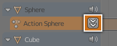

Стежки -- Tracks¶
Стежки -- це система нашарування НЛА. На найбільш базовому її рівні вона може допомагати організовувати смужки. Але вона також нашаровує рух подібно до того, як пікселі нашаровуються у редакторі зображень -- нижній шар спершу, і далі до верху, останній шар.

Стежки та Смужки НЛА.
- Соло -- Solo (іконка із зіркою)
- Перемикач соло стежки -- Solo Track спричиняє, що тільки ефекти виділених стежок будуть видимі при анімуванні.
- Приглушення -- Mute (іконка з гучномовцем)
- Зберігає стежку від впливання на анімацію. (Приглушення -- Mute застосовується тільки тоді, коли не використовується «Соло» -- Solo). Усі смужки на такій стежці рисуються як приглушені (обведені пунктирною лінією).
- Блокування -- Lock (іконка замка)
- Запобігає змінам на цьому шарі.
Стежка Дії -- Action Track¶
Стандартно, Редактор Дій -- Action Editor автоматично зберігає ключкадри, створені вами у 3D Огляді -- 3D View, у дію на основі імені об'єкта, з яким ви працюєте.
- Опущення -- Push Down (іконка з подвійною стрілкою вниз)
Перетворює активну дію у нову НЛА смужку вгорі стеку НЛА.
Кнопка «Опущення» -- Push Down дії.
- Пришпилення -- Pin (іконка зі шпилькою)
Якщо ви спробуєте пересунути смужки, коли активний режим Підправки -- Tweak Mode, то ви помітите, що її ключі будуть рухатися разом з нею. У деяких випадках вам потрібно, щоб ці її ключі залишилися в своїх оригінальних кадрах, незалежно від того, де знаходиться смужка. Для цього відшпильте ікону справа від назви смужки.
Смужка НЛА з пришпиленими ключами.
Смужка переміщена, зауважте, що ключі перемістилися разом з нею.
Відшпилені ключі повернулися у свої оригінальні кадри.
Запасання дії -- Action Stashing¶
При створенні нової дії, якщо наявна дія має тільки одного користувача (тобто поточний орієнтир тільки), то вона буде «запасена» у стеку НЛА. Запасання дій повинно запобігти більшості випадків втрати дій.
Метод «запасання» дії працює, зберігаючи інакше невикористані/неактивні дії в стеку НЛА, як смужки у спеціально приглушених Стежках НЛА. У такий спосіб Blender може «знати», що ця дія пов'язана з певним блоком даних (тобто певним об'єктом або певним матеріалом/лампою/тощо) і що ви все ще хочете зберегти її для пізнішого використання.
Видалення і Конвертування -- Deleting & Converting¶
Якщо ви вирішите, що ви більше не хочете мати запасену дію, просто видаліть відповідну смужку НЛА, а потім збережіть та перезавантажте файл.
Також, зауважте, що оскільки -- це є смужки НЛА, ви можете повторно використати їх, як звичайні смужки НЛА, просто знявши приглушення (та перейменувавши) стежку, в яку вони входять. Ви можете також схотіти пересунути її вище над іншими стежками із запасеними діями.
Вилучити Порожні Дані Анімації -- Remove Empty Animation Data¶
Орієнтир
| Menu: |
|---|
Цей оператор вилучає блоки AnimData (обмежені тільки тим, які видимі у редакторі анімації, в якому вони виконуються), що є «порожніми» (тобто такими, що не мають жодних активної дії, драйверів та стежок або смужок НЛА).
Це інколи дає можливість покінчити з великою кількістю блоків даних, які мають старі та невикористовувані контейнери Даних Анімації, що все ще прикріплені. Це найчастіше відбувається, коли робота здійснюється щодо графіки руху (тобто, коли деякі пов'язані об'єкти мають попередньо використаний для розробки набір багаторазових активів) і це особливо відволікає у Редакторі НЛА -- NLA Editor.